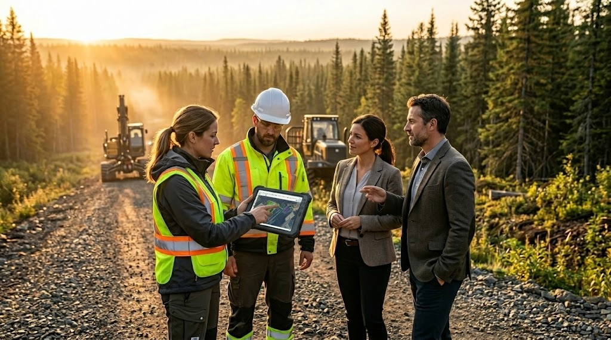

Being a forestry contractor in Canada means juggling a multitude of responsibilities every day: managing multiple job sites simultaneously, coordinating crews scattered across the territory, maintaining a heavy equipment fleet worth millions of dollars, ensuring regulatory compliance and, despite all of this, remaining profitable. Without the right digital tools, this reality often translates into endless days spent compiling data, verifying timesheets and manually preparing reports. This guide explores how forestry contractor software solutions radically transform operations management.
The daily reality of forestry contractors
The typical forestry contractor manages between two and ten active job sites simultaneously, spread across territory that can cover hundreds of kilometres. Each job site involves a crew of 5 to 30 workers, an equipment fleet including harvesters, skidders, delimbers, forwarders and trucks, along with a set of regulatory constraints specific to each cutting block.
Work order clients, whether large pulp and paper companies, forestry cooperatives or other industrial clients, each have their own requirements for reports, data formats and reporting frequency. The contractor must adapt to each client while maintaining their own internal management systems.
Pain points that hinder productivity
Paper timesheets: a time sink
Managing timesheets on paper is probably the most universally felt pain point among logging contractors. Each operator fills out their timesheet manually at the end of the day, often in conditions hardly conducive to writing -- aboard their equipment or at a forest camp. These sheets must then be collected, deciphered, validated and transcribed into a computer system at the office. Illegible handwriting, missed declarations and delivery delays translate directly into payroll and billing problems.
Fuel tracking: a fiscal headache
Fuel tracking is another process that consumes enormous amounts of time when managed manually. Forestry contractors are entitled to a tax rebate on fuel used off-road, but to claim it, they must precisely document each refuelling: which machine, quantity, date and hour meter reading. On a job site with 15 machines being refuelled daily, manual tracking quickly becomes unmanageable, and the fiscal losses from missed declarations can represent thousands of dollars annually.
Disconnected data between field and office
Without an integrated system, production, maintenance, timesheet and fuel data live in separate silos. The office does not know what is happening in the field in real time, management decisions are made with data that may be a week old, and preparing reports for clients becomes a tedious and error-prone manual compilation exercise.
How digital tools solve each pain point
Job site management: documents, prescriptions and price lists
A forest operations software platform allows you to structure each job site with its associated documents: silvicultural prescriptions, price lists by species, sector maps, cutting permits and client-specific instructions. All information is centralized and accessible both at the office and on field tablets. When a prescription is modified, the update is automatically pushed to field devices at the next synchronization.
Fleet management: maintenance, QR codes and work orders
Digital fleet management transforms equipment maintenance. Each piece of equipment is identified by a unique QR code. A simple scan with the field tablet displays the complete machine history: engine hours, recent maintenance, active work orders and parts on order. Preventive maintenance alerts trigger automatically based on configured thresholds (hours, kilometres, dates), preventing costly breakdowns and unplanned downtime.
Automated timesheets
Digital timesheets eliminate manual data entry at the office. The operator records hours directly on the field tablet, with travel time, productive hours and downtime automatically categorized. Supervisor validation takes just a few clicks, and the data is transmitted directly to the payroll system. Processing time drops from several hours per week to a few minutes.
Fuel tracking and tax rebate reports
Digital fuel tracking records each refuelling with the associated machine, quantity, hour meter reading and geolocation. At the end of each period, the system automatically generates fuel tax rebate reports in the format required by tax authorities. No more missed refuellings, and the claims process, once laborious, becomes automatic.
Production tracking by species
Production tracking by tree species is essential for billing and client reporting. The system allows you to record harvested volumes by machine, by operator and by species, with automatic yield calculations and comparison against targets. Production data feeds directly into billing and government reports.
Delivery management
Delivery management tracks each load from the forest to the mill: carrier identification, volume, species, destination, departure and arrival times. Real-time tracking enables you to plan truck rotations and optimize transport logistics while providing complete documentation for billing.
Client reports: detailed, summary and internal
Producing client reports is one of the most appreciated features. The system generates three levels of reports: the detailed report with all raw data for verification, the summary report with key indicators for management meetings, and the internal report with profitability analyses for the contractor. Each client can receive their reports in their required format, without any reformatting work.
ForestLogix: the integrated solution for forestry contractors
ForestLogix was designed in collaboration with Canadian forestry contractors to address precisely this full range of needs. The platform centralizes the management of job sites, fleet, timesheets, fuel, production, deliveries and reports in a single, coherent system. Each module communicates with the others, eliminating the data silos and double entries that characterize fragmented approaches.
Multi-site and multi-client management is at the core of ForestLogix's architecture. Each job site has its own set of documents, configurations and price lists, while feeding consolidated dashboards that give the contractor a complete overview of all operations.
MobileLogix: the field crew's tool
In the field, MobileLogix is the interface through which operators and supervisors interact with the system. The application runs 100% offline on rugged tablets designed to withstand extreme forest conditions. Recording timesheets, fuel, production and inspections takes just a few taps, with forms optimized for use with work gloves.
The integration of artificial intelligence in MobileLogix adds an extra layer of productivity: the forestry chatbot answers operators' technical questions, voice reading allows users to consult information without taking their eyes off the job site, and automatic report generation simplifies end-of-day documentation.
Forestry companies that have made the switch
Several major companies in the Canadian forestry industry have adopted G.A. Logix solutions to modernize their operations. Organizations such as Domtar and the Groupement forestier Quebec use our tools daily to manage their harvesting, transport and planning activities. These large-scale deployments demonstrate the robustness and maturity of the solutions in demanding operational contexts, with hundreds of simultaneous users spread across vast forest territories.
The gains reported by these organizations are consistent: significant reduction in administrative time, improved data accuracy, accelerated billing cycles and simplified compliance with regulatory requirements.
Take the first step toward digital transformation
The complexity of managing a forestry business is not going to decrease: regulatory requirements are tightening, clients demand ever more data and competition for contracts is intensifying. Forestry contractors who invest in digital tools adapted to their reality are positioning themselves to thrive in this demanding environment.
G.A. Logix understands the unique challenges of forestry contractors because our solutions were developed in the field, in direct collaboration with the professionals who use them every day. Contact our team for a demonstration and discover how ForestLogix and MobileLogix can simplify your operations.